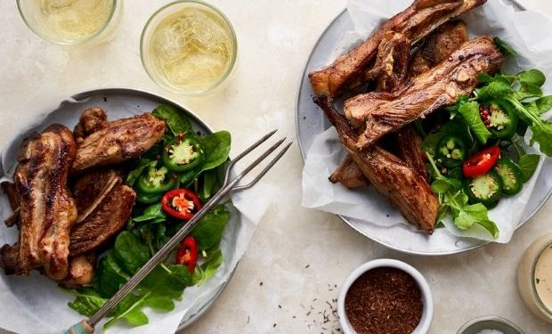

Rooibos smoked riblets recipe

What is Rooibos smoked riblets
These riblets are paired with a beer and amasi dipping sauce - they make for a delicious starter, finger snack or meal! Brought to you by Lamb & Mutton SA.
What you will need
- Rooibos tea leaves or twigs
- Long grain rice
- Brown sugar
- Pepper corns
- Coriander seeds
- Lamb riblets
How to make
- Preheat the oven to 180°C. Line the base of a wok with foil. Combine the tea, rice, sugar, peppercorns, and coriander. Spread the mixture over the foil, taking care that the mixture does not come into contact with the wok.
- Place a wire rack in the wok and place over high heat. Once the mixture starts to smoke, place the riblets on the wire rack and cover tightly with a lid or foil. Smoke the riblets for 15 minutes without lifting the lid.
- Line a baking tray with foil. Transfer the smoked lamb to the tray and season with salt and freshly ground pepper. Roast for 10-12 minutes for medium or until cooked to your preference.
- Transfer the riblets to a plate to rest for 5 minutes. Garnish with rosemary sprigs and lemon.
- Serve the riblets and dipping sauce with roosterkoek or braaibroodjies and a seasonal salad.